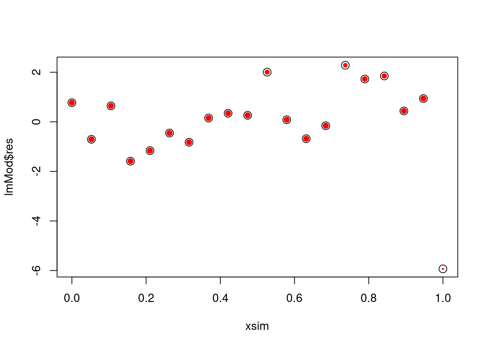
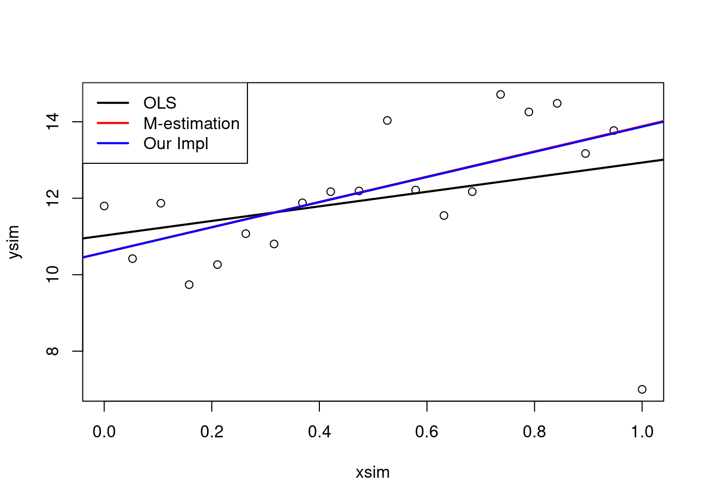

Preamble
Read stored results for heart data
library(tidyverse)
library(limma)
library(QFeatures)
library(msqrob2)
pe <- readRDS(
url(
"https://raw.githubusercontent.com/statOmics/SGA2020/gh-pages/assets/peHeart.rds",
"rb")
)
Linear regression
- Consider a vector of predictors \(\mathbf{x}_i=(x_1,\ldots,x_{p-1})\)
and
- a real-valued response \(Y_i\)
- with \(i = 1, \ldots, n\)
- then the linear regression model can be written as \[
Y_i=f(\mathbf{x}) +\epsilon=\beta_0+\sum\limits_{j=1}^{p-1} x_{ij}\beta
+ \epsilon_i
\] with i.i.d. \(\epsilon_i\sim
N(0,\sigma^2)\)
- \(n\) observations \((\mathbf{x}_1,y_1) \ldots
(\mathbf{x}_n,y_n)\)
- Regression in matrix notation \[\mathbf{Y}=\mathbf{X\beta} +
\boldsymbol{\epsilon}\] with \(\mathbf{Y}=\left[\begin{array}{c}y_1\\
\vdots\\y_n\end{array}\right]\), \(\mathbf{X}=\left[\begin{array}{cccc}
1&x_{11}&\ldots&x_{1p-1}\\
\vdots&\vdots&&\vdots\\
1&x_{n1}&\ldots&x_{np-1}
\end{array}\right]\), \(\boldsymbol{\beta}=\left[\begin{array}{c}\beta_0\\
\vdots\\ \beta_{p-1}\end{array}\right]\) and \(\boldsymbol{\epsilon}=\left[\begin{array}{c}
\epsilon_1 \\ \vdots \\ \epsilon_n\end{array}\right]\)
Least Squares
(LS)
Minimize the residual sum of squares \[\begin{eqnarray*}
RSS(\boldsymbol{\beta})&=&\sum\limits_{i=1}^n e^2_i\\
&=&\sum\limits_{i=1}^n \left(y_i-\beta_0-\sum\limits_{j=1}^p
x_{ij}\beta_j\right)^2
\end{eqnarray*}\]
or in matrix notation \[\begin{eqnarray*}
RSS(\boldsymbol{\beta})&=&(\mathbf{Y}-\mathbf{X\beta})^T(\mathbf{Y}-\mathbf{X\beta})\\
&=&\Vert \mathbf{Y}-\mathbf{X\beta}\Vert^2
\end{eqnarray*}\] with the \(L_2\)-norm of a \(p\)-dim. vector \(v\) \(\Vert
\mathbf{v} \Vert=\sqrt{v_1^2+\ldots+v_p^2}\)
\(\rightarrow\) \(\hat{\boldsymbol{\beta}}=\text{argmin}_\beta \Vert
\mathbf{Y}-\mathbf{X\beta}\Vert^2\)}
Variance
Estimator?
\[
\begin{array}{ccl}
\hat{\boldsymbol{\Sigma}}_{\hat{\boldsymbol{\beta}}}
&=&\text{var}\left[(\mathbf{X}^T\mathbf{X})^{-1}\mathbf{X}^T\mathbf{Y}\right]\\\\
&=&(\mathbf{X}^T\mathbf{X})^{-1}\mathbf{X}^T\text{var}\left[\mathbf{Y}\right]\mathbf{X}(\mathbf{X}^T\mathbf{X})^{-1}\\\\
&=&(\mathbf{X}^T\mathbf{X})^{-1}\mathbf{X}^T(\mathbf{I}\sigma^2)\mathbf{X}(\mathbf{X}^T\mathbf{X})^{-1}
\\\\
&=&(\mathbf{X}^T\mathbf{X})^{-1}\mathbf{X}^T\mathbf{I}\quad\mathbf{X}(\mathbf{X}^T\mathbf{X})^{-1}\sigma^2\\\\
%\hat{\boldmath{\Sigma}}_{\hat{\boldsymbol{\beta}}}&=&(\mathbf{X}^T\mathbf{X})^{-1}\mathbf{X}^T\var\left[\mathbf{Y}\right](\mathbf{X}^T\mathbf{X})^{-1}\mathbf{X}\\
&=&(\mathbf{X}^T\mathbf{X})^{-1}\mathbf{X}^T\mathbf{X}(\mathbf{X}^T\mathbf{X})^{-1}\sigma^2\\\\
&=&(\mathbf{X}^T\mathbf{X})^{-1}\sigma^2
\end{array}
\]
Heart
example
summary(fit)$cov.unscaled * sigma(fit)^2
## (Intercept) locationR tissueV patient4
## (Intercept) 0.3938774 -2.625849e-01 -2.625849e-01 -1.969387e-01
## locationR -0.2625849 5.251699e-01 2.625849e-01 1.549906e-16
## tissueV -0.2625849 2.625849e-01 5.251699e-01 1.549906e-16
## patient4 -0.1969387 1.549906e-16 1.549906e-16 3.938774e-01
## patient8 -0.1969387 1.249600e-16 1.249600e-16 1.969387e-01
## locationR:tissueV 0.2625849 -5.251699e-01 -5.251699e-01 -1.332518e-16
## patient8 locationR:tissueV
## (Intercept) -1.969387e-01 2.625849e-01
## locationR 1.249600e-16 -5.251699e-01
## tissueV 1.249600e-16 -5.251699e-01
## patient4 1.969387e-01 -1.332518e-16
## patient8 3.938774e-01 -1.236848e-16
## locationR:tissueV -1.236848e-16 1.050340e+00
n <- nrow(X)
p <- ncol(X)
mse <- sum((y-X%*%betas)^2)/(n-p)
SigmaBeta <- solve(t(X)%*%X) * mse
SigmaBeta
## (Intercept) locationR tissueV patient4 patient8
## (Intercept) 0.3938774 -0.2625849 -0.2625849 -0.1969387 -0.1969387
## locationR -0.2625849 0.5251699 0.2625849 0.0000000 0.0000000
## tissueV -0.2625849 0.2625849 0.5251699 0.0000000 0.0000000
## patient4 -0.1969387 0.0000000 0.0000000 0.3938774 0.1969387
## patient8 -0.1969387 0.0000000 0.0000000 0.1969387 0.3938774
## locationR:tissueV 0.2625849 -0.5251699 -0.5251699 0.0000000 0.0000000
## locationR:tissueV
## (Intercept) 0.2625849
## locationR -0.5251699
## tissueV -0.5251699
## patient4 0.0000000
## patient8 0.0000000
## locationR:tissueV 1.0503398
range(SigmaBeta - summary(fit)$cov.unscaled * sigma(fit)^2)
## [1] -3.996803e-15 7.993606e-15
data.frame(summary(fit)$coef[,1:2], betas = betas, seBetas = diag(SigmaBeta)^.5)
Contrasts
When we assess a contrast we assess a linear combination of model
parameters:
\[ H_0: \mathbf{L^T\beta} = 0 \text{ vs }
H_1: \mathbf{L^T\beta} \neq 0 \]
Estimator of Contrast?
\[\mathbf{L}^T\hat{\boldsymbol{\beta}}\]
Variance?
\[
\boldsymbol{\Sigma}_{\mathbf{L}\hat{\boldsymbol{\beta}}}=\mathbf{L}^T\boldsymbol{\Sigma}_{\hat{\boldsymbol{\beta}}}\mathbf{L}
\]
Heart example
L <- makeContrast(
c(
"tissueV = 0",
"tissueV + locationR:tissueV = 0",
"tissueV + 0.5*locationR:tissueV = 0","locationR:tissueV = 0"),
parameterNames =
rowData(pe[["proteinRobust"]])$msqrobModels[[2]] %>%
getCoef %>%
names
)
L
## tissueV tissueV + locationR:tissueV
## (Intercept) 0 0
## locationR 0 0
## tissueV 1 1
## patient4 0 0
## patient8 0 0
## locationR:tissueV 0 1
## tissueV + 0.5 * locationR:tissueV locationR:tissueV
## (Intercept) 0.0 0
## locationR 0.0 0
## tissueV 1.0 0
## patient4 0.0 0
## patient8 0.0 0
## locationR:tissueV 0.5 1
contrasts <- t(L) %*% betas
SigmaContrasts <- t(L) %*% SigmaBeta %*% L
seContrasts <- SigmaContrasts %>%
diag %>%
sqrt
Comparison with lm and glht results
## Loading required package: mvtnorm
## Loading required package: survival
## Loading required package: TH.data
## Loading required package: MASS
##
## Attaching package: 'MASS'
## The following object is masked from 'package:dplyr':
##
## select
##
## Attaching package: 'TH.data'
## The following object is masked from 'package:MASS':
##
## geyser
fitGlht <- glht(fit, linfct = t(L))
summary(fitGlht, test = adjusted("none"))
##
## Simultaneous Tests for General Linear Hypotheses
##
## Fit: lm(formula = y ~ location * tissue + patient, data = colData(pe),
## x = TRUE)
##
## Linear Hypotheses:
## Estimate Std. Error t value Pr(>|t|)
## tissueV == 0 0.12757 0.72469 0.176 0.866
## tissueV + locationR:tissueV == 0 0.08626 0.72469 0.119 0.909
## tissueV + 0.5 * locationR:tissueV == 0 0.10691 0.51243 0.209 0.842
## locationR:tissueV == 0 -0.04131 1.02486 -0.040 0.969
## (Adjusted p values reported -- none method)
data.frame(contrasts, seContrasts)
Note, that the power for assessing \(\log_2\) FC between ventriculum and atrium
left and right is the same. Indeed, the standard errors are equal for
both effects.
Note, that the power for assessing \(\log_2\) FC between ventriculum and atrium
over both heart regions is higher than when assessing the effect left or
right.
- Indeed, the standard error is a factor \(\sqrt{2}\) smaller for the former
effect
- We intuitively can explain this because we can use all samples
(double the number of samples) to assess the average effect.
- Hence the variance is a factor two smaller, and the se with a factor
\(\sqrt{2}\)
Note, that we have the lowest power to pick up an interaction
effect. Indeed, the se is a factor \(\sqrt{2}\) larger than for the ventriculum
- atrium effect left or right and a factor 2 larger than for the average
effect between ventriculum and atrium.
seContrasts / seContrasts[1]
## tissueV tissueV + locationR:tissueV
## 1.0000000 1.0000000
## tissueV + 0.5 * locationR:tissueV locationR:tissueV
## 0.7071068 1.4142136
## [1] 1.414214
## [1] 0.7071068
t-tests
When the assumptions of the linear model hold \[
\hat{\boldsymbol{\beta}} \sim
MVN\left[\boldsymbol{\beta},\left(\mathbf{X}^T\mathbf{X}\right)^{-1}\sigma^2\right]
\]
Hence, \[
\mathbf{L}^T\hat{\boldsymbol{\beta}} \sim
MVN\left[\mathbf{L}^T\boldsymbol{\beta},\mathbf{L}^T\left[\left(\mathbf{X}^T\mathbf{X}\right)^{-1}\sigma^2\right]\mathbf{L}\right]
\]
We estimate \(\sigma^2\) by MSE
\[\hat{\sigma}^2=\frac{\mathbf{e}^T\mathbf{e}}{n-p}
\rightarrow
\hat{\boldsymbol{\Sigma}}_{\hat{\boldsymbol{\beta}}}=\left(\mathbf{X}^T\mathbf{X}\right)^{-1}\hat\sigma^2\]
When we test one contrast at the time (e.g. the \(k^\text{th}\) contrast) the statistic
reduces to
\[T=\frac{\mathbf{L}_k^T\hat{\boldsymbol{\beta}}}{\sqrt{\left(\mathbf{L}^T_k\hat{\boldsymbol{\Sigma}}_{\hat{\boldsymbol{\beta}}}\mathbf{L}_k\right)}}
\underset{H_0}{\sim} t_{n-p}\] follows a t distribution with n-p
degrees of freedom under \(H_0:
\mathbf{L}^T_k\hat{\boldsymbol{\beta}}=0\)
Heart
example
tContrasts <- contrasts/seContrasts
pContrasts <- pt(abs(tContrasts),
df = n - p,
lower.tail = FALSE) * 2
Comparison with lm and glht results
summary(fitGlht, test = adjusted("none"))
##
## Simultaneous Tests for General Linear Hypotheses
##
## Fit: lm(formula = y ~ location * tissue + patient, data = colData(pe),
## x = TRUE)
##
## Linear Hypotheses:
## Estimate Std. Error t value Pr(>|t|)
## tissueV == 0 0.12757 0.72469 0.176 0.866
## tissueV + locationR:tissueV == 0 0.08626 0.72469 0.119 0.909
## tissueV + 0.5 * locationR:tissueV == 0 0.10691 0.51243 0.209 0.842
## locationR:tissueV == 0 -0.04131 1.02486 -0.040 0.969
## (Adjusted p values reported -- none method)
data.frame(contrasts, seContrasts, tContrasts, pContrasts)
Robust regression
With msqrob2 we perform robust regression to estimate the model
parameters of the regression model
No normality assumption needed
Robust fit minimises the maximal bias of the estimators
CI and statistical tests are based on asymptotic theory
If \(\epsilon\) is normal, the
M-estimators have a high efficiency!
ordinary least squares (OLS): minimize loss function \[\sum\limits_{i=1}^n
(y_i-\mathbf{x}_i^T\boldsymbol{\beta})^2\]
M-estimation: minimize loss function \[\sum\limits_{i=1}^n \rho\left(y_i-\mathbf{x}_i^T\boldsymbol{\beta}\right)\]
with
- \(\rho\) is symmetric, i.e. \(\rho(z)=\rho(-z)\)
- \(\rho\) has a minimum at \(\rho(0)=0\), is positive for all \(z\neq 0\)
- \(\rho(z)\) increases as \(\vert z\vert\) increases
The estimator \(\hat{\mu}\) is also
the solution to the equation \[
\sum_{i=1}^n \Psi(y_i - \mathbf{x}_i\boldsymbol{\beta}) =0,
\] where \(\Psi\) is the
derivative of \(\rho\). For \(\hat{\beta}\) possessing the robustness
property, \(\Psi\) should be
bounded.
Example: least squares
\(\rho(z) = z^2\), and thus
\(\Psi(z)=2z\) (unbounded!). Not
robust!
\(\hat{\boldsymbol{\beta}}\) is
the solution of \[
\sum_{i=1}^n 2 \mathbf{x}_i (y_i - \mathbf{x}_i^T\boldsymbol{\beta}) = 0
\text{ or } \hat{\boldsymbol{\beta}} =
(\mathbf{X}^T\mathbf{X})^{-1}\mathbf{X}\mathbf{y}
\] with \(\mathbf{X}=[\mathbf{x}_1
\ldots \mathbf{x}_G]^T\)
When a location and a scale parameter, say \(\sigma\), have to be estimated
simultaneously, we write \[
(\hat{\boldsymbol{\beta}},\hat{\sigma}) =
\text{ArgMin}_{\boldsymbol{\beta},\sigma} \sum_{i=1}^n
\rho\left(\frac{y_i - \mathbf{x}_i^T\boldsymbol{\beta}}{\sigma}\right)
\text{ and } \sum_{i=1}^n \Psi\left(\frac{y_i -
\mathbf{x}_i^T\boldsymbol{\beta}}{\sigma}\right) =0.
\]
Define \(u_i = \frac{y_i -
\mathbf{x}_i^T\boldsymbol{\beta}}{\sigma}\). The last estimation
equation is equivalent to \[
\sum_{i=1}^n w(u_i) u_i = 0 ,
\] with weight function \(w(u)=\Psi(u)/u\). This is the typical form
that appears when solving the iteratively reweighted least squares
problem, \[
(\hat{\boldsymbol{\beta}},\hat{\sigma}) = \text{ArgMin}_{\mu,\sigma}
\sum_{i=1}^n w(u_i^{(k-1)}) \left(u_i^{(k)}\right)^2 ,
\] where \(k\) represents the
iteration number.
Some Examples of
Robust Functions

PhD thesis Bolstad 2004
The \(\rho\) functions

PhD thesis Bolstad 2004
Common \(\Psi\)-Functions

PhD thesis Bolstad 2004
Corresponding
Weight Functions

PhD thesis Bolstad 2004
library("MASS")
rfit <- rlm(y ~ location * tissue + patient, colData(pe), maxit=1)
## Warning in rlm.default(x, y, weights, method = method, wt.method = wt.method, :
## 'rlm' failed to converge in 1 steps
qplot(fit$coefficient[-1],
rfit$coefficient[-1],
xlab="fit",
ylab="robust fit") +
geom_abline() +
xlim(range(c(fit$coefficient[-1],rfit$coefficient[-1]))) +
ylim(range(c(fit$coefficient[-1],rfit$coefficient[-1])))
## [1] 0.9516397 1.0000000 0.6628477 1.0000000 1.0000000 1.0000000 1.0000000
## [8] 1.0000000 1.0000000 0.4805187 1.0000000 0.4344049
plot(
rfit$fitted,
rfit$res,
cex=rfit$w,
pch=19,col=2,
cex.lab=1.5,
cex.axis=1.5,
ylab="residuals",
xlab="fit")
points(rfit$fitted, rfit$res , cex= 1.5)
##
## Call:
## lm(formula = y ~ location * tissue + patient, data = colData(pe),
## x = TRUE)
##
## Residuals:
## Min 1Q Median 3Q Max
## -1.29698 -0.32767 0.04041 0.24905 1.17251
##
## Coefficients:
## Estimate Std. Error t value Pr(>|t|)
## (Intercept) 26.57559 0.62760 42.345 1.16e-08 ***
## locationR 0.20636 0.72469 0.285 0.785
## tissueV 0.12757 0.72469 0.176 0.866
## patient4 0.30592 0.62760 0.487 0.643
## patient8 -0.33433 0.62760 -0.533 0.613
## locationR:tissueV -0.04131 1.02486 -0.040 0.969
## ---
## Signif. codes: 0 '***' 0.001 '**' 0.01 '*' 0.05 '.' 0.1 ' ' 1
##
## Residual standard error: 0.8876 on 6 degrees of freedom
## Multiple R-squared: 0.1687, Adjusted R-squared: -0.524
## F-statistic: 0.2436 on 5 and 6 DF, p-value: 0.9286
##
## Call: rlm(formula = y ~ location * tissue + patient, data = colData(pe),
## maxit = 1)
## Residuals:
## Min 1Q Median 3Q Max
## -1.51703 -0.22326 0.05909 0.16009 1.26070
##
## Coefficients:
## Value Std. Error t value
## (Intercept) 26.3378 0.5391 48.8585
## locationR 0.2883 0.6225 0.4631
## tissueV 0.2095 0.6225 0.3365
## patient4 0.4654 0.5391 0.8633
## patient8 -0.0261 0.5391 -0.0484
## locationR:tissueV -0.0555 0.8803 -0.0630
##
## Residual standard error: 0.4189 on 6 degrees of freedom
rowData(pe[["proteinRobust"]])$msqrobModels[[2]] %>% getCoef
## (Intercept) locationR tissueV patient4
## 26.33779939 0.28826213 0.20946392 0.46536955
## patient8 locationR:tissueV
## -0.02608046 -0.05550111
Understanding
implementation of robust regression
Simulate 20
observations from a linear model with errors that follow a normal
distribution
set.seed <- 112358
nobs <- 20
sdy <- 1
xsim <- seq(0, 1, length.out = nobs)
ysim <- 10 + 5*xsim + rnorm(nobs, sd = sdy)
add outlier at high
leverage point
fit robust linear
model
library(MASS)
mEst <- rlm(ysim ~ xsim)
plot results
plot(xsim, ysim)
abline(ols, lwd = 2)
abline(mEst, col = "red", lwd = 2)
legend("topleft",
legend = c("OLS", "M-estimation"),
lwd = 2,
col = 1:2)
## [1] 1.000 1.000 1.000 1.000 1.000 1.000 1.000 1.000 1.000 1.000 1.000 1.000
## [13] 1.000 1.000 1.000 1.000 1.000 1.000 1.000 0.255
The plot clearly shows that the outlier has a high impact on the
slope estimate. This is because the outlier is at a high leverage point,
i.e. far from the average covariate pattern.
Implement it
yourself
Use robust
variance estimator to calculate the z
res <- lmMod$res
stdev <- mad(res)
stdev
## [1] 1.200969
median(abs(res-median(res)))*1.4826
## [1] 1.200969
Calculate weights
use psi.huber function
w <- psi.huber(z)
plot(xsim, ysim)
plot(xsim, lmMod$res, cex = w, pch = 19, col = "red")
points(xsim,lmMod$res, cex = 1.5)

Plot results
plot(xsim, ysim)
abline(ols, lwd = 2)
abline(mEst, col = "red", lwd = 2)
abline(lmMod, col = "blue", lwd = 2)
legend("topleft",
legend = c("OLS","M-estimation","Our Impl"),
lwd = 2,
col = c("black", "red", "blue"))

Repeat this many
times
lmMod <- ols
for (k in 1:3)
{
######repeat this part several times until convergence
#use robust variance estimator to calculate the z
res <- lmMod$res
stdev <- mad(res)
median(abs(res-median(res)))*1.4826
z <- res/stdev
#calculate weights
#use psi.huber function
w <- psi.huber(z)
#perform a weighted regression use lm with weights=w
lmMod <- lm(ysim ~ xsim, weights = w)
#plot results
plot(xsim,ysim)
abline(ols, lwd = 2)
abline(mEst, col = "red", lwd = 2)
abline(lmMod, col = "blue", lwd = 2)
legend("topleft",
legend = c("OLS","M-estimation","Our Impl"),
lwd = 2,
col = c("black", "red", "blue")
)
####################################
}

Empirical
Bayes/Moderated \(t\)-test.
A general class of moderated test statistics is given by
\[\tilde{T}_p = \frac{\mathbf{L}_k \hat{
\boldsymbol{\beta_p}}}{\mathbf{L}_k^T(\mathbf{X}^T\mathbf{WX})^{-1}\mathbf{L}_k^T
\tilde{s}_p^2}\]
where \(\tilde{s}_p\) is a moderated
variance estimator.
Simple approach: set \(\tilde{s}_p=s_p +
s_0\): simply add a small positive constant to the denominator of
the t-statistic
theory provides formal framework for borrowing strength across genes
or proteins, e.g. popular bioconductor package \[\tilde{s}_g=\sqrt{\frac{d_ps_p^2+d_0s_0^2}{d_g+d_0}},\]
and the moderated t-statistic is t-distributed with \(d_0+d_g\) degrees of freedom under the null
hypothesis \(H_0:
\mathbf{L}\boldsymbol{\beta}=0\).
- Note, that the degrees of freedom increase by borrowing strength
across proteins.
Intermezzo: Bayesian
Methods
Frequentists consider data as random and population parameters as
fixed but unknown
In Bayesian viewpoint a person has prior beliefs about the
population parameters and the uncertainty on this prior beliefs are
represented by a probability distribution placed on this parameter.
- This distribution reflects the person’s subjective prior opinion
about plausible values of the parameter.
- And is referred to as the prior \(g(\boldsymbol{\theta})\).
Bayesian thinking will update the prior information on the
population parameters by confronting the model to data (\(\mathbf{Y}\)).
By using Bayes Theorem this results in a posterior distribution
on the model parameters.
\[
g(\boldsymbol{\theta}\vert\mathbf{Y})=\frac{f(Y\vert
\boldsymbol{\theta})g(\boldsymbol{\theta})}{\int f(Y\vert
\boldsymbol{\theta}) g(\boldsymbol{\theta}) d\boldsymbol{\theta}}
\text{ }\left(\text{ posterior}=\frac{\text{prior} \times \text{
likelihood}}{\text{Marginal distribution}}\right)
\]
Limma approach
Developed for gene expression analysis with micro arrays. Let g be
the index for gene g. \[
\begin{array}{cc}
&\beta_{gk}\vert \sigma^2_g,\beta_{gk}\neq 0 \sim
N(0,v_{0k}\sigma_g^2)\\\\
\text{Prior}\\
&\frac{1}{\sigma^2_g}\sim s^2_0\frac{\chi^2_{d_0}}{d_0}\\\\\\\\
&\hat \beta_{gk} | \beta_{gk} , \sigma_g^2 \sim N( \beta_{gk} ,
v_{gk}\sigma_g^2)\\\\
\text{Data}\\
&s_g^2\sim \sigma^2_g\frac{\chi^2_{d_g}}{d_g}\\\\
\end{array}
\]
Limma approach
Under this assumption, it can be shown that
Posterior Mean for the variance parameter: \[\tilde{s}^2_p = \text{E}\left[\sigma^2_p\vert
s_p^2\right]=\frac{d_0 s_0^2+d_ps_p^2}{d_0+d_p}\]
\[\tilde{T}_p=\frac{\mathbf{L}_k \hat{
\boldsymbol{\beta_p}}}{\mathbf{L}_k^T(\mathbf{X}^T\mathbf{WX})^{-1}\mathbf{L}_k^T
\tilde{s}_p^2}\]
is t-distributed under \(H_0:
\mathbf{L}_j\boldsymbol{\beta} = 0\)
\[\tilde{T}_p \vert H_0 \sim t(d_0 +
d_p)\]
Empirical Bayes
- A fully Bayesian
- would define the prior distribution by carefully choosing the prior
parameters based on prior knowledge on the process
- would confront the prior to the data and performs inference using
the posterior distribution of the model parameters.
- In an empirical Bayesian approach one estimates the prior parameters
based on the data.
- In Limma moment estimators for \(s_0\) and \(d_0\) are derived using the information on
the gene (protein) wise variances of all genes (proteins).
- In Limma one also does not work with the full
posterior distribution for the variances, but with the maximum
a-posterior estimate.
Illustration
We borrow strength across proteins by
- placing a scaled \(\chi^2\) prior:
\(\chi^2(s_o,d_0)\) on the precisions
(\(1/\sigma^2_p\))
- estimating the prior parameters \(s_0\) and \(df_0\)
- replacing the estimated protein-wise variances (\(s_p^2\)) with the maximum a-posteriori
variance \[\tilde{s}_p = \frac{d_p s^2_p +
d_0 s_0^2}{d_p+d_0}\]
sd <- sapply(
rowData(pe[["proteinRobust"]])$msqrobModels,
getSigma) %>%
na.exclude
sdPost <- sapply(
rowData(pe[["proteinRobust"]])$msqrobModels,
getSigmaPosterior) %>%
na.exclude
p1 <- qplot(sd,sdPost) +
geom_abline()
p1
How do we get to
the posterior standard deviation?
hlp <- limma::squeezeVar(
var = sapply(rowData(pe[["proteinRobust"]])$msqrobModels, getVar),
df = sapply(rowData(pe[["proteinRobust"]])$msqrobModels, getDF)
)
Degrees of
freedom of prior
## [1] 3.385413
model <- rowData(pe[["proteinRobust"]])$msqrobModels[[2]]
getDfPosterior(model) - getDF(model)
## [1] 3.385413
posterior
variance
\[\tilde s_p=\sqrt{\frac{d_p\times s^2_p +
d_0 s_0^2}{d_p+d_0}} \]
## [1] 0.2489859
varPost <- (getVar(model) * getDF(model) + hlp$df.prior * hlp$var.prior)/(getDF(model)+hlp$df.prior)
sqrt(varPost)
## [1] 0.6607153
## [1] 0.6607153
Hence, standard deviations are shrunken towards prior standard
deviation! Large standard deviations become smaller and smaller standard
deviations become larger!
p1 +
geom_hline(yintercept = hlp$var.prior^.5)
Illustration via
Simulation
Suppose that the standard deviations for all proteins are the same
and are equal to 1. We simulate proteins with the same mean as the
fitted mean in the experiment but with standard deviation of 1.
nCoefs <- getCoef(rowData(pe[["proteinRobust"]])$msqrobModels[[2]]) %>% length
coefs <-
sapply(rowData(pe[["proteinRobust"]])$msqrobModels,
function(x) getCoef(x)[1:nCoefs]
) %>%
t %>%
na.exclude
p <- nrow(coefs)
n <- ncol(pe[[1]])
f0_equalVar <- sapply(1:p,
FUN=function(i, n, betas, sd, design) {
rnorm(n, mean = design %*% betas[i,], sd = sd)},
n = n,
betas = coefs,
sd = 1,
design = X
) %>%
t
colnames(f0_equalVar) <- colnames(pe[[1]])
sims <- readQFeatures(f0_equalVar %>% as.data.frame, ecol = 1:n, name = "sim_equalVar")
colData(sims) <- colData(pe)
sims <- msqrob(object = sims, i = "sim_equalVar", formula = ~ location*tissue + patient)
sd0 <- sapply(
rowData(sims[["sim_equalVar"]])$msqrobModels,
getSigma) %>%
na.exclude
sdPost0 <- sapply(
rowData(sims[["sim_equalVar"]])$msqrobModels,
getSigmaPosterior) %>%
na.exclude
qplot(sd0,sdPost0) +
geom_abline() +
ylim(range(sd0))
- We observe a large variability in the individual protein level
standard deviation estimates.
- We simulated proteins with standard deviation of 1, but the protein
estimates vary from 0.17, … , 1.97.
- Large uncertainty on the estimation of variances in small
samples
- The empirical Bayes method, however, recognises that all proteins
are simulated with the same variance.
- Hence, it can borrow tremendous strength across proteins to
stabilize the variance estimation
- Here, it shrinks all protein variance to the prior variance, which
is indeed very close to 1, the value we have adopted in the
simulation.
Note, that the prior degrees of freedom are also set to infinity:
getDF(rowData(sims[["sim_equalVar"]])$msqrobModels[[1]])
## [1] 5.524613
getDfPosterior(rowData(sims[["sim_equalVar"]])$msqrobModels[[1]])
## [1] Inf
which imposes shrinkage to the prior standard deviation!
The empirical Bayes method can thus indeed recognize the common
variance that is shared across all simulated proteins!
P-values
Simulation under
H_0.
- Mean log2 protein intensity for atrium equals mean log2 protein
intensity for ventriculum in the left heart region.
- sd equals the sd for the protein.
- Extract \(\hat \sigma\) and \(\beta\)’s
sd <- sapply(
rowData(pe[["proteinRobust"]])$msqrobModels,
getSigma) %>%
na.exclude
coefs <-
sapply(rowData(pe[["proteinRobust"]])$msqrobModels,
function(x) getCoef(x)[1:nCoefs]
) %>%
t %>%
na.exclude
- Set \(\beta_\text{tissue}\) equal
to 0. No FC between atrium and ventriculum left.
coefs0 <- coefs
coefs0[,3] <- 0
- Simulate protein expressions for each protein from a Normal
distribution under \(H_0\) for left
heart region (no FC between atrium and ventriculum left) and sd the sd
for the protein.
set.seed(104)
f0 <- sapply(1:p,
function(i, betas, sd, design)
rnorm(n, mean = design %*% betas[i,], sd = sd[i]),
betas = coefs0,
sd = sd,
design = X
) %>%
t
colnames(f0) <- colnames(pe[[1]])
- Setup QFeatures object and perform MSqRob analysis
sims <- readQFeatures(f0 %>% as.data.frame, ecol = 1:n, name = "sim0")
colData(sims) <- colData(pe)
sims <- msqrob(object = sims, i = "sim0", formula = ~ location*tissue + patient)
sims <- hypothesisTest(object = sims, i = "sim0", contrast = L)
Evaluate pvalues
under H_0
volcano <- ggplot(rowData(sims[["sim0"]])$tissueV,
aes(x = logFC, y = -log10(pval), color = pval < 0.05)) +
geom_point(cex = 2.5) +
scale_color_manual(values = alpha(c("black", "red"), 0.5)) + theme_minimal()
volcano
Number of false positives without multiple testing?
rowData(sims[["sim0"]])$tissueV %>%
filter(pval <0.05) %>%
nrow
## [1] 115
mean(rowData(sims[["sim0"]])$tissueV$pval < 0.05)
## [1] 0.05665025
hist(rowData(sims[["sim0"]])$tissueV$pval,main = "simulation H0")

- The p-values are uniform!
- All p-values under the null are equally likely.
- Statistical hypthesis testing leads to a uniform test strategy under
\(H_0\)
- If use p-value cutoff at 0.05 we expect to return 5% of the non-DE
proteins as differentially expressed: many false positives can be
expected!
Pvalue distribution
in real experiment
hist(rowData(pe[["proteinRobust"]])$tissueV$pval, main = "realData")
- A mixture of null proteins (non-DE): uniform, and, DE proteins:
enrichment of p-values at low p-values
Correction for multiple
testing
- We can adjust the p-values for multiple testing.
Family wise error
rate correction:
A list of returned proteins is considered to be in error as soon
as it contains at most one false positive protein.
\(\text{FWER} = P(FP \leq
1)\)
FWER: probability of making at least one false positive decision
or probability to declare at least one protein differentially abundant
which is truly non differentially abundant
Bonferroni
method
- Simple method
- \(m\) tests are performed at the
level \(\alpha/m\)
- FWER\(\leq\sum\limits_{p=1}^{m}P(reject
H_{0p}\vert H_{0p}\text{ is true})=m \alpha/m=\alpha\)
- Provides strong control
- Bonferroni is very conservative
- Works for dependent tests
- Adjusted p-value: \(\tilde{p}_p=\min(m\
p_p,1)\)
Bonferroni in
practise
Via R functions
padj <- p.adjust(
rowData(pe[["proteinRobust"]])$tissueV$pval,
method = "bonferroni")
Own Implementation: adjust and make sure that p-value is smaller than
1.
m <- sum(!is.na(rowData(pe[["proteinRobust"]])$tissueV$pval))
padjSelf <- rowData(pe[["proteinRobust"]])$tissueV$pval * m
padjSelf[padjSelf > 1] <- 1
range(padj - padjSelf, na.rm = TRUE)
## [1] 0 0
Illustration in
simulation under \(H_0\) and heart case
study
volcano <- ggplot(rowData(sims[["sim0"]])$tissueV,
aes(x = logFC, y = -log10(pval), color = p.adjust(pval,"bonferroni") < 0.05)) +
geom_point(cex = 2.5) +
scale_color_manual(values = alpha(c("black", "red"), 0.5)) +
theme_minimal() +
ggtitle("simulated heart data under H0")
volcano
- No false positives are returned for simulation under H_0. List is
correct according to FWER.
volcano <- ggplot(rowData(pe[["proteinRobust"]])$tissueV,
aes(x = logFC, y = -log10(pval), color = p.adjust(pval,"bonferroni") < 0.05)) +
geom_point(cex = 2.5) +
scale_color_manual(values = alpha(c("black", "red"), 0.5)) +
theme_minimal() +
ggtitle("real heart data")
volcano
## Warning: Removed 1263 rows containing missing values (geom_point).
- Very few proteins are returned for real data. Very
conservative!
False discovery
rate
- Adjusted P-values with the Benjamini Hochberg correction correspond
to the estimated FDR of the set that is returned when the significance
level is set at this threshold. \[\begin{eqnarray}
FDR(p_0) &=& \text{E}\left[\frac{FP}{(FP + TP)}\right]\\
&\approx&\frac{p_0 \times m}{\#p_p \leq p_0}\\
\end{eqnarray}\]
So adjusted p-value for protein j equals \[\tilde p_j = \frac{p_{0,j} \times m}{\#p_p \leq
p_{0,j}}\]
However, the FDR always has to be between 0 and 1 so:
\[\tilde p_j = \min\left[\frac{p_{0,j}
\times m}{\#p_p \leq p_{0,j}},1\right]\]
and the adjusted p-values should remain in the same order as the
original p-values.
\[\tilde p_j = \min\limits_{\forall k:
p_k > p_j} \min\left[\frac{p_{0,k} \times m}{\#p_p \leq
p_{0,k}},1\right]\]
- Order pvalues
pvals <- rowData(pe[["proteinRobust"]])$tissueV$pval
naInd <- is.na(pvals)
pHlp <- pvals[!naInd]
ord <- pHlp %>% order
pHlp <- pHlp[ord]
- Adjust ordered p-values
pHlp <- pHlp*length(pHlp)/(1:length(pHlp))
- Ensure adjust p-values are smaller are equal than 1
- Monotonicity constraint
pmin <- pHlp[length(pHlp)]
for (j in (length(pHlp)-1):1)
{
if (pHlp[j] < pmin)
pmin <- pHlp[j] else
pHlp[j] <- pmin
}
- Put p-values back in original order
pHlp[ord] <- pHlp
pAdj <- pvals
pAdj[!naInd] <- pHlp
head(pAdj)
## [1] NA 0.8351039 NA NA 0.9062353 NA
head(rowData(pe[["proteinRobust"]])$tissueV)
range(rowData(pe[["proteinRobust"]])$tissueV$adjPval - pAdj,na.rm=TRUE)
## [1] -2.220446e-16 2.220446e-16
Illustration in
simulation under \(H_0\) and heart case
study
volcano <- ggplot(rowData(sims[["sim0"]])$tissueV,
aes(x = logFC, y = -log10(pval), color = adjPval < 0.05)) +
geom_point(cex = 2.5) +
scale_color_manual(values = alpha(c("black", "red"), 0.5)) +
theme_minimal() +
ggtitle("simulated heart data under H0")
volcano
- No false positives are returned for simulation under H_0. List is
correct according to FWER.
- It can be shown that the FDR-method controls the FWER when \(H_0\) is true for all features.
volcano <- ggplot(rowData(pe[["proteinRobust"]])$tissueV,
aes(x = logFC, y = -log10(pval), color = adjPval < 0.05)) +
geom_point(cex = 2.5) +
scale_color_manual(values = alpha(c("black", "red"), 0.5)) +
theme_minimal() +
ggtitle("real heart data")
volcano
## Warning: Removed 1263 rows containing missing values (geom_point).
The FDR method allows us to return much longer DA protein lists at
the expense of a few false positives. The FDR controls the fraction of
false positives in the list that you return on average on the
significance level that is adopted. So if you use \(\alpha=0.05\) we expect on average 5% of
false positives in the list that we return.
